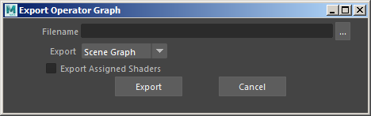

通过工具菜单“导出运算符图表”(Export Operator Graph)，可以将运算符图表烘焙到 .ass 文件。随后，用户可以将它导入另一个场景（或另一个 DCC），或者使用 aiIncludeGraph 运算符将它包含在内。可以导出所选的图表，也可以导出在渲染设置(Render Settings)的“目标运算符”(Target Operator)参数中定义的全局场景图表。也可以将由设置参数(Set Parameter)运算符引用的最终着色器导出到文件。导出/导入/包含运算符图表可以跨 DCC 工作，并允许在不同的 Arnold 插件（MtoA、HtoA、C4DToA、MAXtoA、KtoA 等）中重现相同的外观制作。
指向输出 .ass 文件的路径。
此字段确定要导出的运算符图表：
运算符图表可以通过设置参数(Set Parameter)运算符来应用着色器指定。默认情况下，导出运算符图表时将保存指定而不是着色器。如果导入/包含了此运算符图表，则这些着色器应当以相同的名称存在。启用“导出指定的着色器”(Export Assigned Shaders)选项时，还允许导出 .ass 文件中指定的所有着色器。当通过 aiIncludeGraph 运算符加载此 .ass 文件时，它将是自包含的，并将重现与保存图表时相同的外观制作。
工具菜单“导入运算符图表”(Import Operator Graph)可以导入先前已烘焙到 .ass 文件的运算符图表，并将整个图表创建为 Maya 场景中的运算符节点。
这将仅导入运算符。最终使用“导出指定的着色器”(Export Assigned Shaders)选项烘焙到文件的着色器无法重新导入。